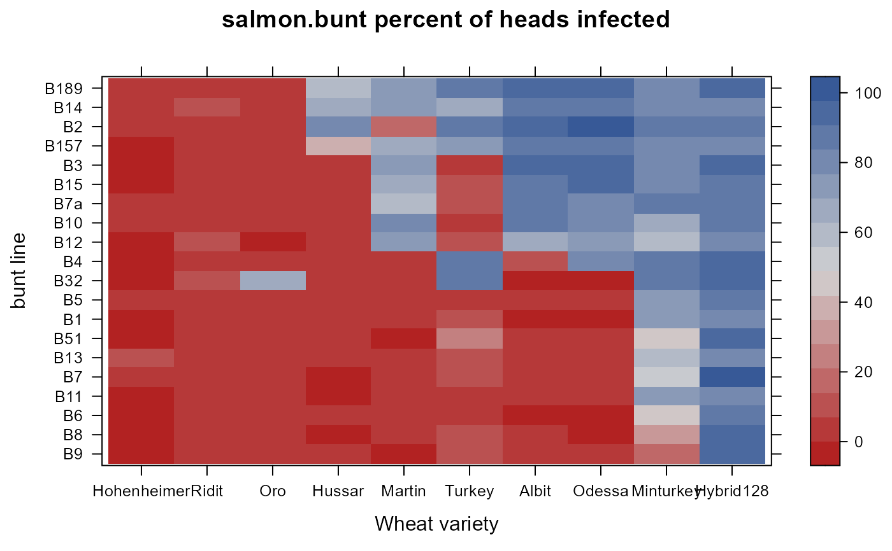

salmon.bunt.RdFungus infection in varieties of wheat
A data frame with 400 observations on the following 4 variables.
buntbunt factor, 20 levels
pctpercent infected
reprep factor, 2 levels
gengenotype factor, 10 levels
Note: Salmon (1938) gives results for all 69 types of bunt, not just the 20 shown in the paper.
H. A. Rodenhiser and C. S. Holton (1937) say that races from two different species of bunt were used, Tilletia tritici and T. levis.
This data gives the results with 20 types of bunt (fungus) for winter wheat varieties at Kearneysville, W. Va., in 1935. Altogether there were 69 types of bunt included in the experiment, of which the 20 in this data are representative. Each type of wheat was grown in a short row (5 to 8 feet), the seed of which had been innoculated with the spores of bunt. The entire seeding was then repeated in the same order.
Infection was recorded as a percentage of the total number of heads counted at or near harvest. The number counted was seldom less than 200 and sometimes more than 400 per row.
S.C. Salmon, 1938. Generalized standard errors for evaluating bunt experiments with wheat. Agronomy Journal, 30, 647--663. Table 1. https://doi.org/10.2134/agronj1938.00021962003000080003x
Salmon says the data came from:
H. A. Rodenhiser and C. S. Holton (1937). Physiologic races of Tilletia tritici and T. levis. Journal of Agricultural Research, 55, 483-496. naldc.nal.usda.gov/download/IND43969050/PDF
# \dontrun{ library(agridat) data(salmon.bunt) dat <- salmon.bunt d2 <- aggregate(pct~bunt+gen, dat, FUN=mean) # average reps d2$gen <- reorder(d2$gen, d2$pct) d2$bunt <- reorder(d2$bunt, d2$pct) # Some wheat varieties (Hohenheimer) are resistant to all bunts, and some (Hybrid128) # are susceptible to all bunts. Note the groups of bunt races that are similar, # such as the first 4 rows of this plot. Also note the strong wheat*bunt interaction. libs(lattice) redblue <- colorRampPalette(c("firebrick", "lightgray", "#375997")) levelplot(pct~gen+bunt,d2, col.regions=redblue, main="salmon.bunt percent of heads infected", xlab="Wheat variety", ylab="bunt line")# We don't have individual counts, so use beta regression libs(betareg) dat$y <- dat$pct/100 + .001 # Beta regression does not allow 0 dat$gen <- reorder(dat$gen, dat$pct) # For a prettier dot plot m1 <- betareg(y ~ gen + bunt + gen:bunt, data=dat) # Construct 95 percent confidence intervals p1 <- cbind(dat, lo = predict(m1, type='quantile', at=.025), est = predict(m1, type='quantile', at=.5), up = predict(m1, type='quantile', at=.975)) p1 <- subset(p1, rep=="R1") # Plot the model intervals over the original data libs(latticeExtra) dotplot(bunt~y|gen, data=dat, pch='x', col='red', main="Observed data and 95 pct intervals for bunt infection") + segplot(bunt~lo+up|gen, data=p1, centers=est, draw.bands=FALSE)# To evaluate wheat, we probably want to include bunt as a random effect... # }